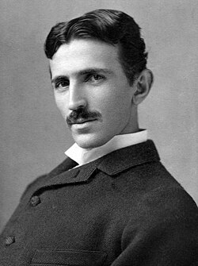

Nikola Tesla
Inventor, 1856 to 1943

The pioneer of alternating current power, radio, and wireless experiments. In 1899, at his Colorado Springs lab, he recorded faint repeating signals that he believed came from intelligent beings on another planet, and wrote about them in 1901 in "Talking with the Planets." 1
UNVERIFIED: no evidence shows the signals were artificial. Researchers have suggested natural radio emissions, lightning, or Marconi's transmissions.
Open in the interactive Watcher
Related
- Tesla's Colorado Springs lab His Colorado Springs lab
- Tesla: Talking with the Planets Talking with the Planets
Sources
- Nikola Tesla Wikipedia